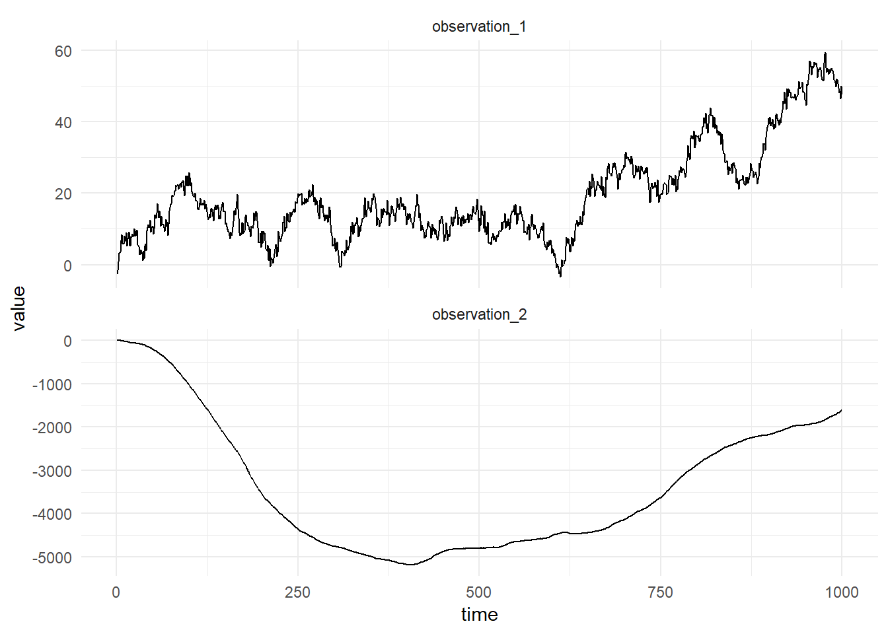
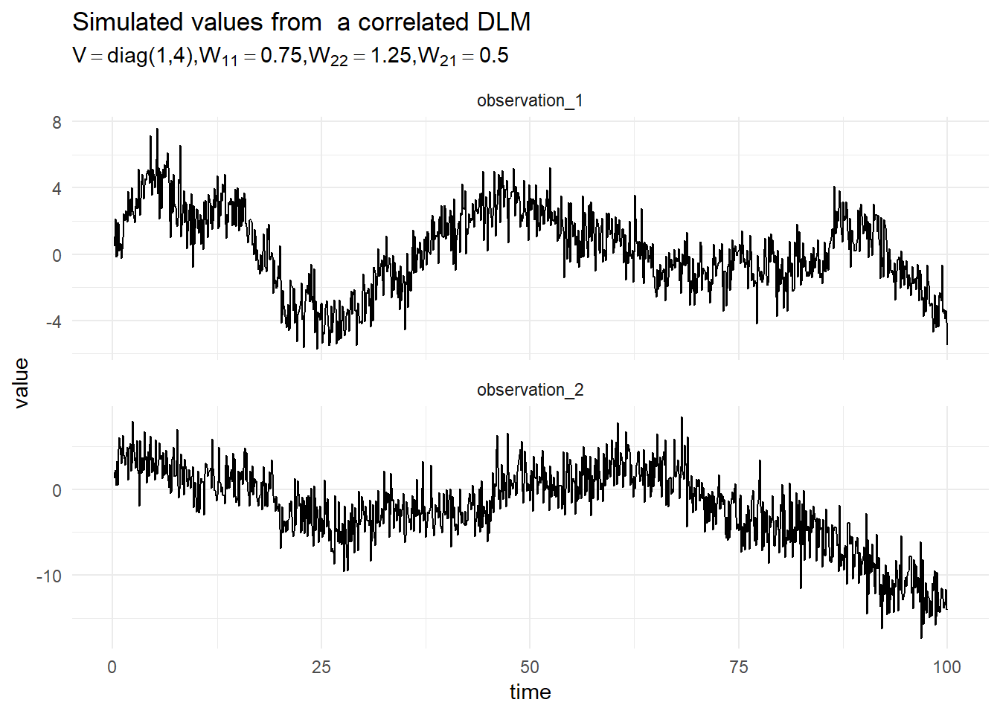
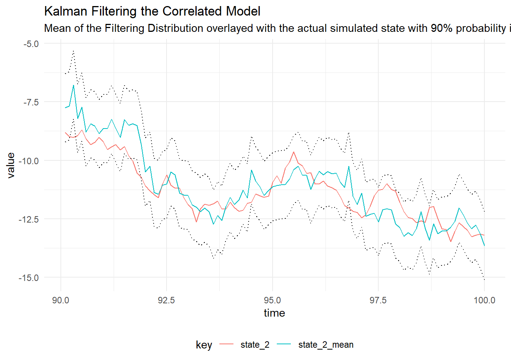

Correlated DLM
Multivariate DLMs
In order to model many related time series and perform forecasting jointly we can formulate a Dynamic Linear Model with an observation vector containing values from the related time series at each timestep. To induce correlation in the model, the State evolution matrix, \(W\), is allowed to be full-rank. This can be learned from the data.
\[\begin{align} \textbf{Y}_t &= F_t x_t + \textbf{v}_t, \quad v_t \sim \textrm{MVN}(0, V), \\ X_t &= G_t x_{t-1} + w_t, \quad w_t \sim \textrm{MVN}(0, W). \end{align}\]
The observation at each time point consists of \(n\) related time series, \(\textbf{Y}_t = (y_{1,t},\dots,y_{n,t})\).
Example
To illustrate the combination of single models into a combined model, we consider the “outer sum” of two models. The first model is a first order polynomial model, the second model in the composition is a linear trend. The first model is given by:
\[\begin{align} Y_t &= x_t + v_t, \quad v_t \sim \textrm{MVN}(0, V), \\ X_t &= x_{t-1} + w_t, \quad w_t \sim \textrm{MVN}(0, W), \\ X_0 &\sim \textrm{MVN}(m_0, C_0). \end{align}\]
Where the state, \(x_t\) is univarate an evolves according to a random walk. The second model is given by:
\[\begin{align} Y_t &= F \textbf{x}_t + \textbf{v}_t, \quad v_t \sim \textrm{MVN}(0, V), \\ \textbf{X}_t &= G \textbf{x}_{t-1} + w_t, \quad w_t \sim \textrm{MVN}(0, W), \\ \textbf{X}_0 &\sim \textrm{MVN}(m_0, C_0). \end{align}\]
The state is two dimensional, as such the system noise matrix \(W\) is a \(2 \times 2\) matrix. The observation matrix does not depend on time and is given by, \(F = (1 \quad 0)\) and the system evolution matrix is:
\[G = \begin{pmatrix} 1 & 1 \\ 0 & 1 \end{pmatrix}.\]
The two DLMs above can be composed using an outer sum to model two time series which are thought to be related. The observation matrices are block-concatenated so that the composed model has as the observation matrix:
\[F = \begin{pmatrix} 1 & 0 \\ 0 & 1 \\ 0 & 0 \end{pmatrix}\]
The system evolution matrices of each model in the composition are block-concatenated so that the system matrix of the composed model is:
\[G = \begin{pmatrix} 1 & 0 & 0 \\ 0 & 1 & 1 \\ 0 & 0 & 1 \end{pmatrix}.\]
In order to compose these two models in the Scala package, we first define the two models:
import dlm.model._
val mod1 = Dlm.polynomial(1)
val mod2 = Dlm.polynomial(2)The models can now be composed using the outer sum function:
import breeze.linalg._
val composedModel = mod1 |*| mod2
val p = Dlm.Parameters(
v = diag(DenseVector(1.0, 2.0)),
w = diag(DenseVector(2.0, 3.0, 1.0)),
m0 = DenseVector.zeros[Double](3),
c0 = DenseMatrix.eye[Double](3)
)Then we can simulate observations from the composedModel:
val sims = Dlm.simulateRegular(0, composedModel, p).
steps.
take(1000).
toArrayThe figure below shows a simulation from this composed model:

Example 2
For simplicity of exposition we consider the outer sum of two first order DLMs. given by the following equation:
\[\begin{align*} \begin{pmatrix}y_{1,t} \\ y_{2,t}\end{pmatrix} &= \begin{pmatrix}1 & 0 \\ 0 & 1\end{pmatrix}\begin{pmatrix}x_{1,t} \\ x_{2,t}\end{pmatrix} + \begin{pmatrix}v_{1,t} \\ v_{2,t} \end{pmatrix}, \qquad \textbf{v} \sim \textrm{MVN}\left(0, \begin{pmatrix}V_1 & 0 \\ 0 & V_2\end{pmatrix}\right), \\ \begin{pmatrix}x_{1,t} \\ x_{2,t} \end{pmatrix} &= \begin{pmatrix}1 & 0 \\ 0 & 1\end{pmatrix} \begin{pmatrix}x_{1,t-1} \\ x_{2,t-1} \end{pmatrix} + \begin{pmatrix} w_1 \\ w_2 \end{pmatrix}, \qquad \textbf{v} \sim \textrm{MVN}\left(0, \begin{pmatrix}W_1 & W_2 \\ W_3 & W_4\end{pmatrix}\right), \\ \textbf{x}_0 &\sim \textrm{MVN}(m_0, C_0). \end{align*}\]
A simulation from this model is presented in the figure below:

Kalman Filtering
Given that we have simulated the model, we can perform the Kalman filter to determine the filtering distribution of the latent state using the true value of the parameters. The figure below shows the filtering distribution with 90% probability intervals for time \(t = 200, \dots , 300\).

Parameter Learning
The unkown parameters of the model are the system noise matrix, \(W\) and the observation noise matrix, \(V\). The observation noise matrix is assumed to be diagonal, meaning the measurement noise of each process is considered to be independent. We can use Gibbs Sampling to determine the values of \(W\) and \(V\) as expanded upon in the section on Gibbs Sampling.
Gibbs Sampling Correlated Model
In order to perform Gibbs Sampling for the Correlated model in Scala:
val iters = GibbsSampling.sample(
composedModel,
InverseGamma(4.0, 9.0),
InverseGamma(3.0, 3.0),
p,
sims.map(_._1))Diagnostic plots for the MCMC draws from the posterior distribution of the non-zero diagonal elements of the Observation noise covariance matrix for the simulated correlated model

Diagnostic plots for the MCMC draws from the posterior distribution of the System noise covariance matrix for the simulated correlated model